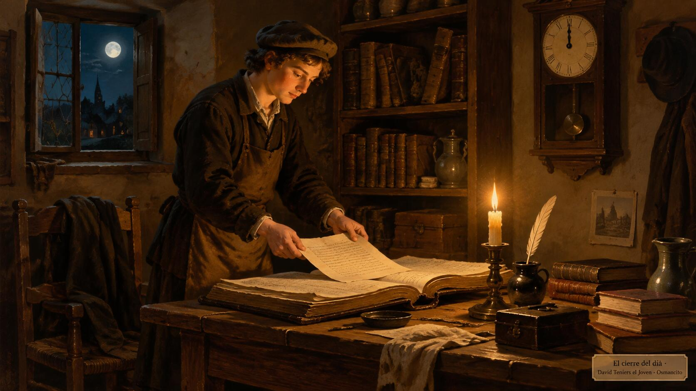

21 de octubre de 2026
Alambique - Cierre del día

Cómo la casa pasa lo de hoy a la historia, cada noche a medianoche. No hace falta conocer el sistema para seguirlo.
Las tres páginas
Repo maquinas, cada md con su gemelo html; el md es la fuente y los dos se actualizan juntos:
- Estado actual (cgbabd_status): lo que corre, los automáticos, hecho hoy, sociales del día, pendiente de Osmancito. Cambia durante el día.
- Historial de tareas (cgbabd_historial): trabajos terminados hasta ayer, el más reciente arriba. Cada uno con título, fecha en palabras, detalle y enlace «Leer» si hay. Página borrada: texto sin enlace.
- Historial social (cgbabf_historial-social): un bloque por día, el más reciente arriba.
Durante el día
Cada trabajo terminado se anota como viñeta en «Hecho hoy» y como línea del borrador oculto BORRADOR-DEL-DIA al final del Historial (fecha | título | detalle | enlace opcional). Lo social va como viñetas cortas en «Sociales». Nunca se menciona búsqueda de trabajo o clientes.
A medianoche (00:00 UTC-4)
- git pull.
- Revisar que el borrador tenga todo lo terminado.
- Cerrar: las líneas del borrador pasan al principio del Historial como bloques con fecha en palabras y el borrador queda vacío; las viñetas de «Sociales» pasan al Historial social como bloque nuevo con la fecha del día que termina; «Hecho hoy» y «Sociales» quedan en «- Nada todavía.»; se ajustan «Corriendo ahora» y «Pendiente de Osmancito»; se actualizan los contadores (💬 mensajes · 🎙️ palabras de voz · ✉️ correos de Instinct · 🎖️ medallas suyas en WhatsApp, sin contar reacciones); la línea de fecha y hora se reescribe en UTC-4.
- Firma «© {año} Osmancito» en cada página.
- Espejar los md en sus html.
- Commit y push con tu correo como autor y committer (regla 55).
- Verificar las tres páginas en vivo.
- Escribirte solo si algo falla.
© 2026 Osmancito